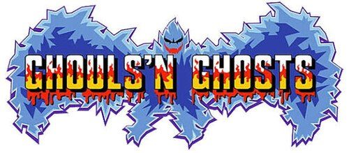
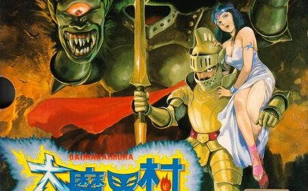
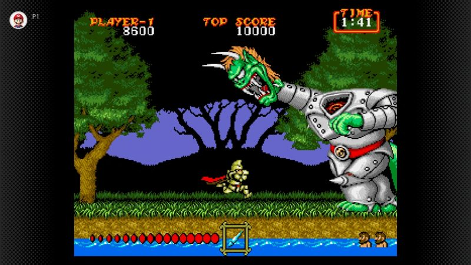
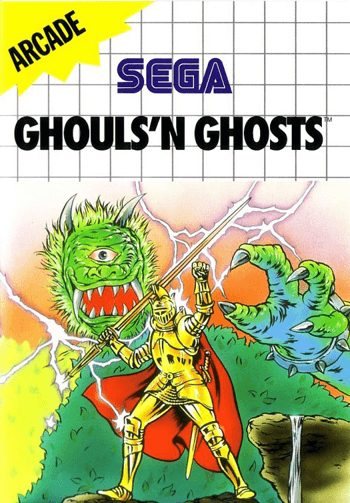

Sir Arthur vuelve al cementerio más cruel del arcade
► INSERT COIN ◄
Ghouls'n Ghosts (en Japón, Daimakaimura) es un juego de plataformas y acción de Capcom que llegó a los recreativos en 1988. Es la secuela directa de Ghosts'n Goblins (1985) y mantiene su espíritu: un caballero valiente, un mundo de pesadilla y una dificultad que no perdona ni un error.
Tras los sucesos del primer juego, el rey de los demonios regresa. Esta vez no se conforma con raptar a la princesa Prin Prin: se lleva su alma y llena el reino de muertos vivientes. Sir Arthur, otra vez en calzoncillos al primer golpe, debe cruzar bosques, pueblos fantasma, cuevas y castillos para enfrentarse a Lucifer.
El juego introdujo ideas inconfundibles: la armadura que se rompe en dos golpes, la armadura dorada que da acceso a la magia, la variedad de armas (lanza, daga, antorcha, hacha, ballesta…) y los magos que convierten a Arthur en pato o anciano. Su música y su ambientación gótica lo hicieron un clásico.




Cada regalo del directo cambia la partida de Arthur al instante. Estos son los efectos:
| REGALO | EFECTO | QUÉ PASA |
|---|---|---|
| Rosa | quitar_armadura | Arthur pierde la armadura. |
| Barra fluorescente | dar_armadura_plata | Arthur recibe armadura de plata. |
| Eres increíble | quitar_tiempo | Se resta tiempo del reloj de la fase. |
| Estrella de mar | arma_aleatoria | Cambia el arma por una al azar. |
| Aplauso | ralentizar | El juego va más lento. |
| Te adoro | acelerar | El juego va más rápido. |
| Quiéreme | transformar_pato | Arthur se convierte en pato. |
| Alas de guardián | sin_salto | Arthur no puede saltar. |
| Café | paralizar | Arthur se queda paralizado. |
| Slay | arma_antorcha | Arthur recibe la antorcha. |
| Flores matutinas | arma_lanza | Arthur recibe la lanza. |
| Rosa blanca | arma_hacha | Arthur recibe el hacha. |
| Mamma mia | arma_bola_fuego | Arthur recibe la bola de fuego. |
| Arcoíris | dar_magia | Arthur consigue magia. |
| Alas de hada | vida_extra | Arthur gana una vida extra. |
| Mascota extraterrestre | quitar_vida | Arthur pierde una vida. |
| REGALO | EFECTO | QUÉ PASA |
|---|---|---|
| Cohete | dar_armadura | Arthur recupera la armadura. |
| Balón giratorio | inmunidad | Arthur es inmune durante un rato. |
| Capibara | completar_fase | Se completa la fase actual. |
| Escudo | matar | Arthur vuelve a la primera pantalla del juego. |
Los efectos repetidos aparecen una sola vez.